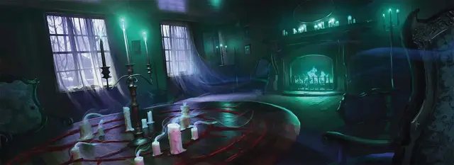

Медиум
Spirit Medium

Характеристики Телосложение, Интеллект, Мудрость
Черта Черта Тёмного дара
Навыки Проницательность, Религия
Инструменты Игровой набор
Снаряжение Выберите А или Б: (А) Кинжал, Игровой набор (выбранный выше), Корзина, Колокольчик, 8 Свеч, Чернила, Писчее перо, 5 листов Бумаги, Трутница, Дорожная одежда, 32 ЗМ; или (Б) 50 ЗМ
В ходе странных ритуалов или судьбоносных встреч вы обнаружили, что обладаете уникальной возможности связываться с духами мёртвых и проклятых. Ваше тело - проводник для этих духов, и это даёт вам доступ к познаниям с того света. Намерения духов, однако, не всегда невинны, и за их дары порой приходится платить пугающую цену.